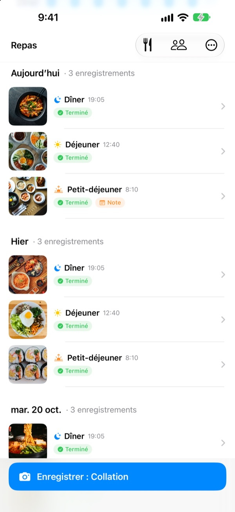
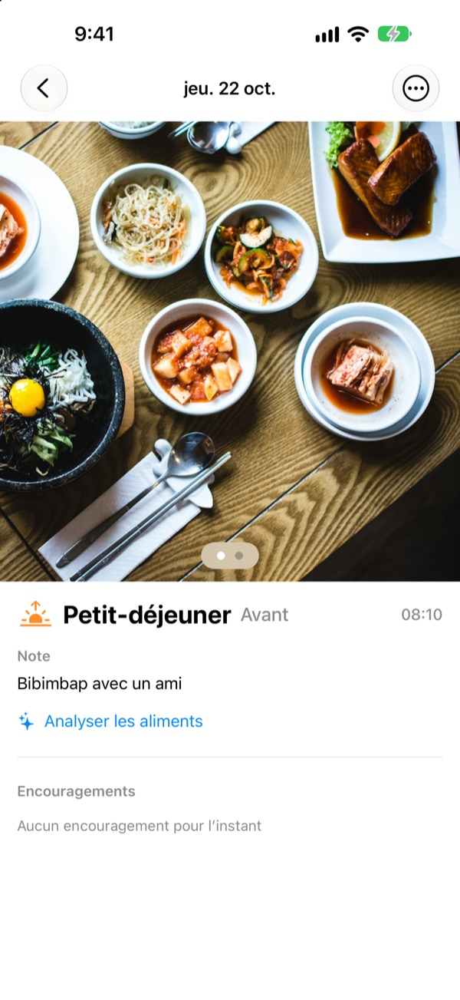
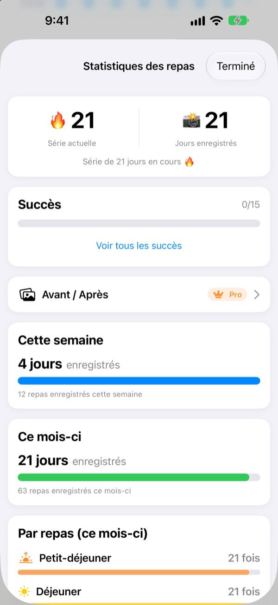
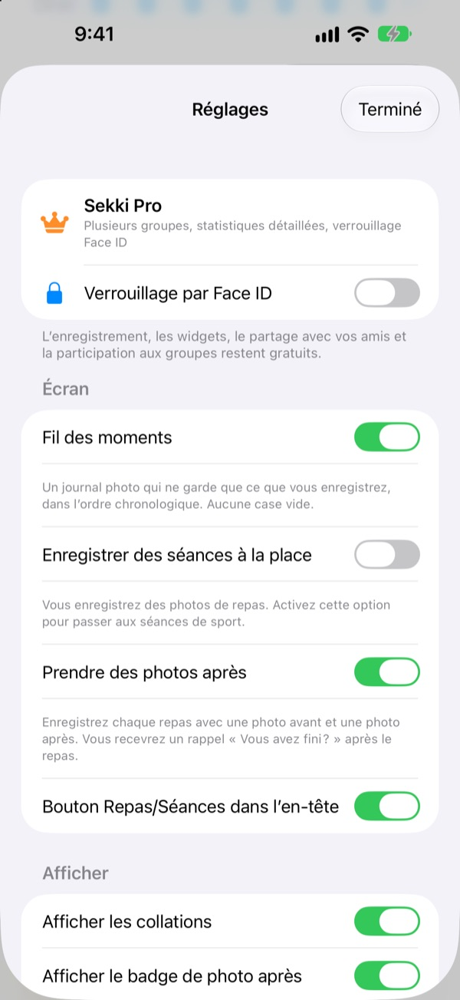

Une photo avant de manger.
C'est noté.
Sekki regarde l'heure de la photo et la range en petit-déjeuner, déjeuner, dîner ou collation. Un seul repas noté par jour, et votre série continue.
Le journal, les statistiques, les widgets et le partage avec vos amis sont gratuits.

Essayez vous-même
Choisissez une heure et touchez le bouton d'enregistrement. Comme dans l'app, il indique déjà le repas correspondant.
Vous avez déjà lâché un journal alimentaire au bout de trois jours ?
Un petit-déjeuner sauté, un dîner oublié, et les cases vides finissent par agacer jusqu'à ce qu'on supprime l'app. Sekki n'a pas de cases vides. Seuls les repas notés s'empilent dans l'ordre, et une seule photo suffit pour que la journée compte.
Une photo, et le repas est rangé
Selon l'heure de la photo, Sekki la classe en petit-déjeuner, déjeuner, dîner ou collation. Ajoutez des photos avant et après, notez un repas sans photo ou écrivez une note.
Les plats sont reconnus gratuitement sur l'appareil, et vos photos ne quittent jamais votre téléphone.

Un journal qui ne rétrécit jamais
Un repas par jour garde la série, et le total de jours notés ne baisse jamais. Les statistiques de la semaine et du mois montrent combien de jours et de repas vous avez notés, pas un taux de réussite.
En chemin, vous débloquez des succès comme 7 jours d'affilée ou Lève-tôt.

Seulement les repas choisis, sans ouvrir l'app
Choisissez les repas pour lesquels vous voulez un rappel et réglez les horaires sur votre rythme. Après la photo d'avant, marquez Terminé directement depuis la notification.
Notez aussi avec le bouton Action, Siri, Raccourcis ou un widget, et ajoutez des amis par code pour vous encourager avec des emojis et des commentaires.

Trois étapes pour commencer
- 1
Choisissez vos repas
Au premier lancement, Sekki demande quels repas vous rappeler. Modifiable dans les Réglages.
- 2
Une photo avant de manger
Le bouton d'enregistrement affiche déjà le repas de l'heure. Touchez, photographiez, c'est fait.
- 3
Un toucher à la fin
Touchez Terminé dans la notification ou le widget, ou ajoutez une photo d'après.
Noter sans ouvrir l'app
- Notification
- Après la photo d'avant, marquez Terminé depuis l'alerte
- Widget de l'écran d'accueil
- Voyez le nombre de repas du jour et celui en cours, puis touchez Terminé
- Widgets de l'écran verrouillé
- Rectangulaire, circulaire et en ligne
- Bouton Action · Siri · Raccourcis
- Marquez Terminé d'une pression ou d'une phrase
- Enregistrer dans Photos
- Activez-le dans les Réglages pour des albums Sekki séparés pour les repas et le sport
- Mode sport
- Le sport est rangé à part des repas, avec le nombre de séances du mois en un coup d'œil
Le bouton Terminé du widget nécessite iOS 17 ou version ultérieure.
Noter est gratuit. Sekki Pro va plus loin.
Gratuit
- Journal photo avec classement automatique, photos avant et après, notes
- Séries, total de jours, statistiques hebdomadaires et mensuelles, succès
- Rappels pour les repas choisis, Terminé sans ouvrir l'app
- Widgets, bouton Action, Siri et Raccourcis
- Partage des repas et du sport avec vos amis, emojis et commentaires
- Créer un groupe, en rejoindre autant que vous voulez
- Reconnaissance des plats sur l'appareil
Sekki Pro
- Plusieurs groupes : famille, bureau, partenaires de sport
- Comparer côte à côte vos repas d'il y a quelques semaines et d'aujourd'hui
- Voir les plats que vous mangez le plus
- Verrouiller l'app avec Face ID ou Touch ID
Abonnement annuel ou mensuel, ou achat unique à vie
L'abonnement se renouvelle automatiquement sauf résiliation au moins 24 heures avant la fin de la période. Résiliez à tout moment dans Réglages > Compte Apple > Abonnements. Conditions d'utilisation : m1zz.github.io/RoutineCamera/fr/terms.html
Questions fréquentes
Où sont stockées mes photos ?
Sur votre appareil. Si vous activez Enregistrer automatiquement dans Photos dans les Réglages, elles vont aussi dans les albums Sekki de Photos. Tant que Partager mes repas est activé (c'est le cas au départ), elles sont envoyées sur iCloud pour que vos amis puissent les voir. Désactivez-le dans Réglages > Compte et partage.
Comment ajouter des amis ?
Sur l'écran Amis, partagez votre code à six caractères et saisissez celui de votre ami. Vous pouvez coller plusieurs codes à la fois, séparés par des virgules.
Comment encourager un ami ?
Ouvrez un repas de votre ami et laissez un emoji ou un petit commentaire. S'il n'a encore rien noté, touchez la case vide pour lui faire signe.
Est-ce que je perds ma série si je saute un repas ?
Non. Notez n'importe quel repas ce jour-là, collations comprises, et la série continue. Même si vous sautez une journée entière, le total de jours notés ne baisse pas.
Je ne reçois pas de notifications.
Vérifiez dans Réglages iOS > Notifications que Sekki est autorisé, et que l'appareil est connecté à iCloud. Les heures de rappel se changent dans les réglages de l'app.
La reconnaissance des plats envoie-t-elle mes photos à un serveur ?
Non. Elle se fait sur l'appareil, vos photos ne quittent jamais votre téléphone. Gratuit et sans limite.
Comment supprimer mon compte et mes données ?
Allez dans Amis > Compte > Supprimer le compte. Le compte et les données de repas stockés sur le serveur sont supprimés définitivement. En cas de souci, écrivez-nous.
Comment résilier l'abonnement ?
Dans Réglages > Compte Apple > Abonnements. Il se renouvelle automatiquement sauf résiliation au moins 24 heures avant la fin de la période. L'achat à vie se paie une seule fois.
Bug, idée ou question sur votre compte : écrivez à leeo@kakao.com ou en DM à @lee25_ios sur Instagram. Nous répondons généralement sous un ou deux jours.